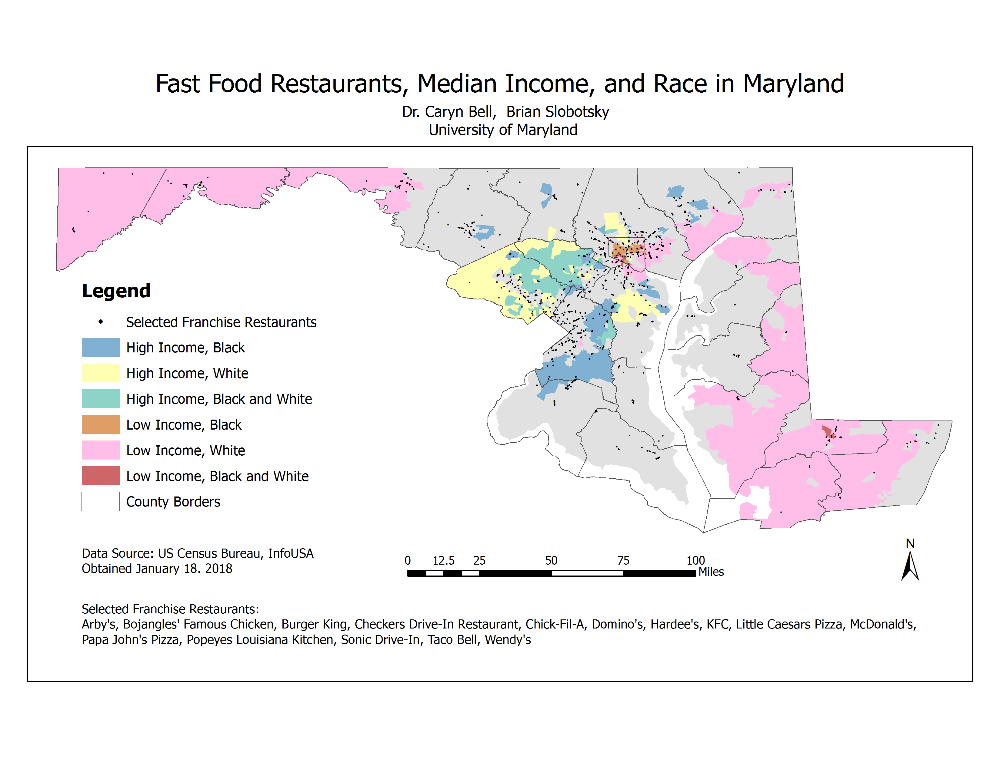
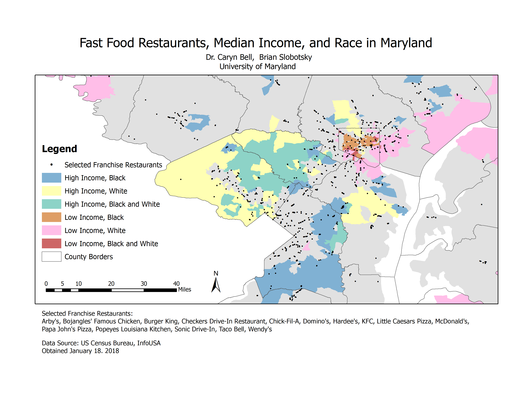
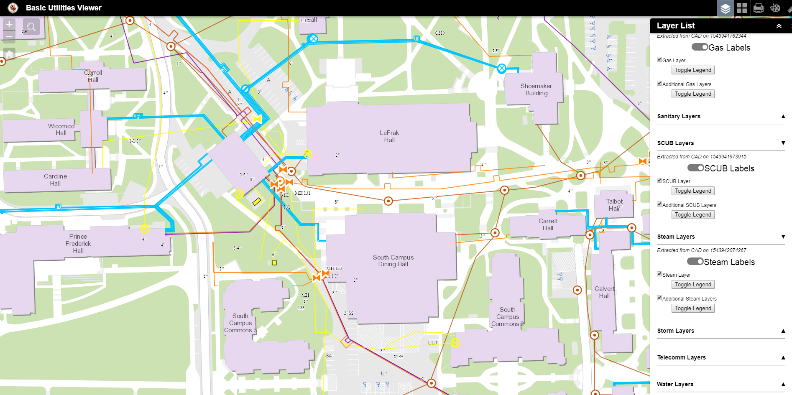
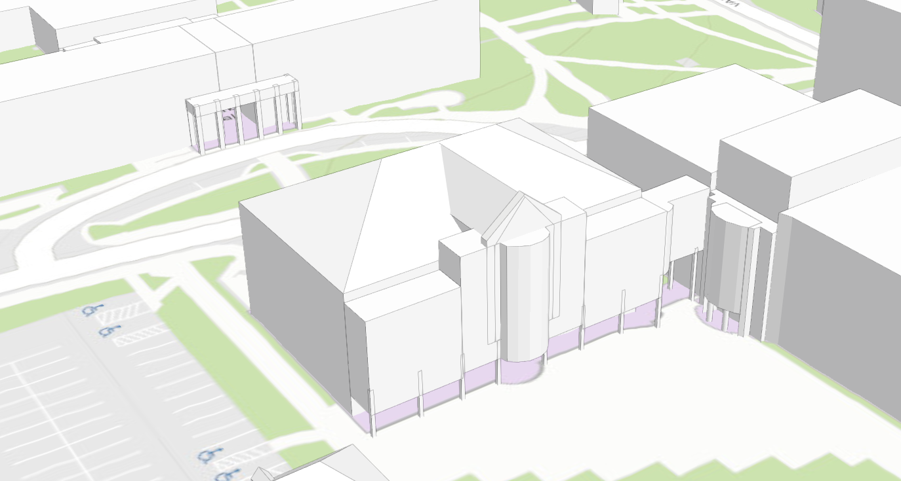
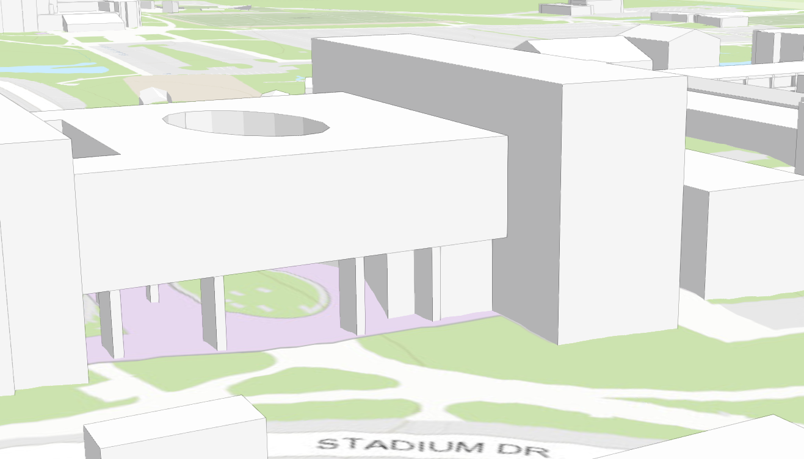
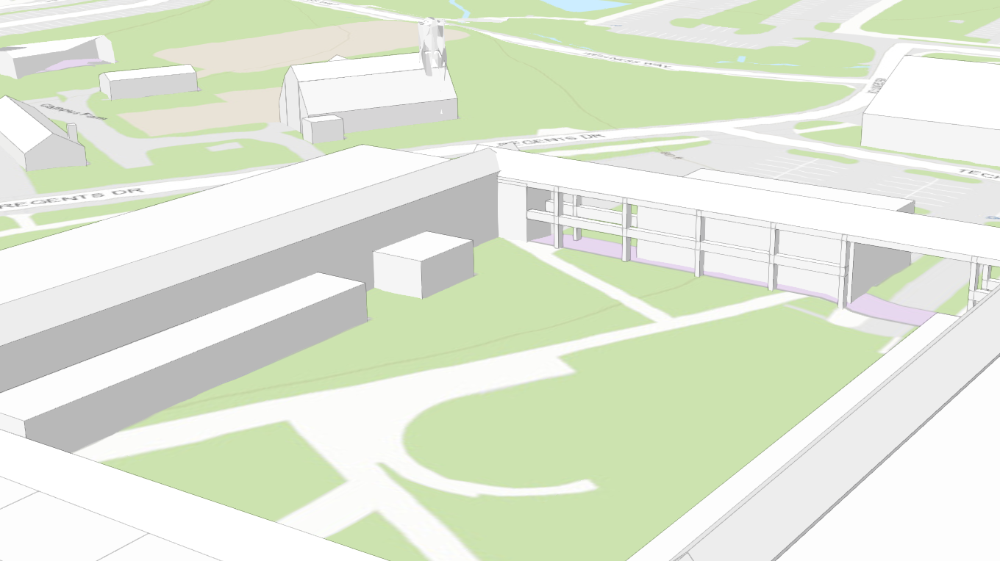
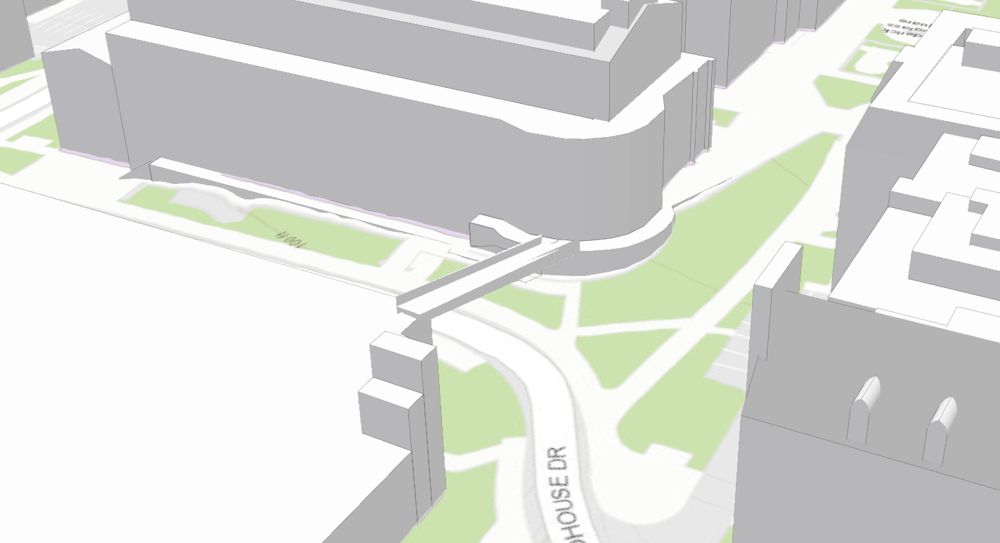
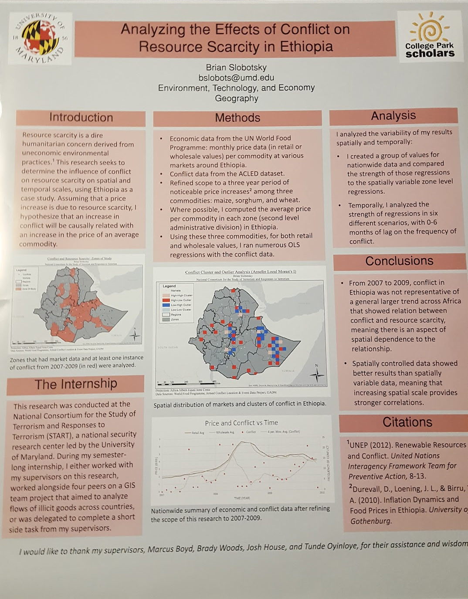

Malaria Prevalence (2019)
Researcher at the Center for Geospatial Information Science, May 2019 to August 2019
Note: for privacy reasons, the data below was randomized and blurred in order to appear on this website.
A data visualization I created utilizing ArcGIS to support a professor's presentation. The data are presented as pie charts which vary in size by the number of plantation workers per village. The design includes multiple data frames as inset maps, manual label placement, and minimal empty white space. There is also a gray layer with adjusted transparency outside the area of focus to make the data appear in a lighter focus by contrast,
Fast Food Restaurants, Median Income, and Race in Maryland (2019)
Researcher at the Center for Geospatial Information Science, May 2019 to August 2019


A data visualization I developed with ArcGIS. The data are shown as a nominal data choropleth of census tracts without borders, points showing fast food locations, and county borders for context. The color scheme was designed with racial colors varied by hue and "black and white" as a combination of the individual racial colors, and high income as brighter colored than lower income.
Basic Utility Viewer (2018)
GIS Intern at University of Maryland Facilities Management Campus GIS, September 2018 to December 2018
I produced an ArcGIS Online Webmap application with ArcCatolog Spatial ETL tools (to automate conversion of CAD files to shapefiles), ArcMap, and HTML coding from a REST server to the application. I added the final six of 12 total utility networks to the Basic Utility Viewer. I also created reference files for layer symbology for all 12 networks. My contribution to this project was the final step before the University of Maryland GIS office was able to publish this web application for use in the field. This screenshot shows the 6 systems I generated within an unfinished version of the web application.
Roof shapes (2018)
GIS Intern at University of Maryland Facilities Management Campus GIS, September 2018 to December 2018

Cambridge Hall & Atlantic Hall

Physical Sciences Complex

Animal Science Building

Bridge between Plant Sciences Building and Regents Drive Parking Garage
This 3D model of campus buildings was created with ArcGIS Pro. I applied the program's roof form functionality with lidar points to determine exact heights. I primarily contributed to buildings with underpasses and bridges, with a few labeled examples above. After merging all polygons by building ID, I published the content to ArcGIS Online as an interactive scene. My contribution was part of a larger project that was not finished during my internship.
START Research poster (2017-18)
Geospatial Intelligence Intern at START Consortium, August 2017 to December 2017
I presented my semester-long independent project at START with this poster at the 2018 College Park Scholars Academic Showcase. ArcGIS and its spatial statistics tools were used to create the two maps.